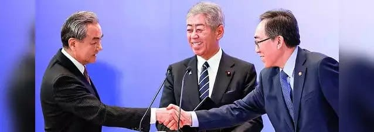

世界苦茶03月23日新闻 | 37条 | 王毅会见石破茂后伪造日方立场引发外交冲突

王毅会见石破茂后伪造日方立场引发外交冲突 | 中日韩外长会议举办 | 欧么某个未能就乌克兰50亿欧元援助达成一致 | 以色列在黎巴嫩也展开行动
苦茶数据
美元兑人民币：7.25（昨日7.25，前日7.25）
美元兑日元：149.33（昨日149.05，前日148.32）
上证指数：休市（昨日3364，前日3408）
标普500指数：休市（昨日5667，前日5662）
比特币：84302（昨日84314，前日84518）
布伦特原油：72.16（昨日72.25，前日71.22）
中国新闻
• 王毅会见石破茂伪造对方发言和态度： 中国外交部长王毅3月21日拜会日本首相石破茂。中国外交部当晚发布新闻稿称，石破茂表示：“日方充分认识日中四个政治文件的重要意义，尊重中方阐述的立场，愿同中方加强交往合作，推动两国关系向前发展，更好惠及两国人民。”日本驻华使馆22日发文指，石破茂并没有表示“尊重中方阐述的立场”，中方发布的内容完全不属实。日方已向中方提出抗议和交涉，并要求中方立即删除与事实不符的这一表述。石破茂在会面中提出了东海局势、在华日本人的安心安全、早日释放被拘押日本人、取消对日本水产品的进口限制、恢复进口牛肉等农产品问题等，还强调需要减少这些悬而未决问题和课题。日方对中方发布了不符事实的内容表示遗憾。截至本文发稿，中国外交部稿件仍有相关描述。
• 东航坠机三年无进展 ：在中国东方航空MU5735航班坠机发生后的第三年，中国航空监管机构并未发布调查进展报告，遇难者家属和航空业至今对事故原因一无所知。2022年3月21日，东航一架波音737-800型客机中午1时16分从昆明长水机场起飞，目的地为广州白云机场。客机飞行64分钟后，偏离巡航高度8900米快速下降，在广西西南部山区坠毁。机上123名旅客、九名机组成员全部遇难。这是中国28年来最严重的航空灾难。中国民航局曾在事故发生后发布初步报告，并在事故两周年时发布调查进展情况通报，但内容简短，几乎未提供任何新的信息。
• 中方吁妥善处理电动车案 ：中国商务部部长王文涛与德国汽车巨头奔驰集团董事长康林松会面时说，妥善解决欧盟对华电动汽车反补贴案对当前中欧关系具有重要意义，并希望奔驰继续推动欧方采取实际行动，尽早达成中欧均可接受的方案。据中国商务部网站消息，王文涛星期五与康林松会面，双方就奔驰集团对华合作、欧盟对华电动汽车反补贴案等进行交流。王文涛说，中国坚定不移扩大高水平对外开放，无论国际风云如何变幻，中国开放的大门永远不会关闭。中国吸引外资的政策是一贯的、连续的，将为包括奔驰在内的外资企业提供更加稳定的发展环境、更加广阔的发展空间。
• 李强将会见美议员戴恩斯 ：中国副总理何立峰会见美国参议员戴恩斯时对记者说，中国总理李强星期天将会见戴恩斯。据路透社报道，中美经贸中方牵头人何立峰星期六在北京人民大会堂会见访华的戴恩斯。何立峰在与戴恩斯会晤时对记者透露上述消息。与美国总统特朗普关系密切的戴恩斯，上周在白宫与特朗普会面后，在社交媒体宣布即将访华的消息，并称特朗普“很高兴我将贯彻他的‘美国优先’议程”。
• 中国婚姻登记全国通办 ：中国民政部宣布，将施行婚姻登记“全国通办”，届时办理婚姻登记不再受常住户口所在地限制。星期五召开的中国国务院常务会议审议通过《婚姻登记条例（修订草案）》。会议指出，本次修订落实民法典规定，将近年来婚姻登记“跨省通办”等改革试点成果上升为法律制度，为进一步规范婚姻登记工作、优化婚姻登记服务提供了法治保障。会议要求持续完善全国婚姻基础信息库，加强信息共享，加快推进实现婚姻登记“全国通办”，提高婚姻登记服务标准化、规范化、便利化水平。
• 中日韩外长共促互信合作 ：中国外交部长王毅在中日韩外长会后表示，中日韩三方一致认为有必要增进互信，深化合作，并将努力为年内举行中日韩领导人会议营造良好条件和氛围。据新华社报道，王毅星期六在东京出席第11次中日韩外长会后，同日本外长岩屋毅、韩国外长赵兑烈共同会见记者。王毅说，中日韩三方一致认为在国际格局变乱交织、世界经济复苏乏力背景下，中日韩有必要、也有责任进一步加强沟通，增进互信，深化合作，为地区和平发展提供更多稳定因素。
• 王毅吁韩坚持友华立场 ：中国外交部长王毅在东京与韩国外长赵兑烈会面时说，希望韩国坚守建交初心，奉行积极友好的对华政策。两人在会谈时也就中国国家主席习近平出席下半年在韩国举行的亚太经合组织领导人会议进行商讨。据中国外交部官网消息，中共政治局委员、中国外交部长王毅星期五在东京会见共同出席第11次中日韩外长会的韩国外长赵兑烈。王毅说，中韩是搬不走的近邻，也是分不开的伙伴，应当常来常往，越走越近。今年是中国人民抗日战争胜利80周年，也是韩国光复80周年，具有特殊重要意义。中方对韩政策保持稳定性，无论韩国国内局势如何变化，中方都始终坚持中韩睦邻友好。
• 王毅促日恪守台海承诺 ：中国外交部长王毅在东京与日本首相石破茂会面时，呼吁日本要切实履行在台湾问题的政治承诺。据中国外交部官网消息，日本首相石破茂星期五在东京会见到访的中共政治局委员、中国外交部长王毅。王毅说，中日同为有重要影响的国家，携手为亚洲开辟更好未来是双方的共同使命。面对变乱交织的国际形势和层出不穷的全球挑战，双方理应增进互信、加强合作，为世界提供更多的稳定性和确定性。
• 中日争议海域再现海警 ：在中国外交部长王毅访问日本东京并举行中日韩领导人外交会晤期间，中国海警船年内第二次抵达由布院群岛海域。来访学生承认，中国海警的下一步举动并非意外，北京方面正试图迫使他们不要讨论当前问题。据日韩联合参谋本部透露，日本领导人将在6月日韩三国外长会议召开前，在东京官邸与中国国家主席王毅和韩国总统赵立业举行会谈，就有关问题交换意见。
亚太印太新闻
• 台称大陆47架军机现踪 ：台湾国防部称，截至星期六上午6时的24小时内，侦获中国大陆军机47架次，军舰七艘、公务船一艘。据台湾国防部官网发布的消息，从星期五上午6时至星期六上午6时，侦获大陆军机47架次，其中41架次逾越海峡中线及进入台湾北部、西南及东部空域。台湾国防部公布的解放军进入台海周边空域活动示意图显示，星期五上午7时05分至晚间9时40分，在台湾海峡空域侦获大陆主、辅战机、直升机及无人机29架次，其中23架次逾越中线；星期五上午8时45分至晚间6时50分，在台湾西南空域侦获大陆主、辅战机16架次。
• 台湾法院驳回亚亚上诉 ：台湾法院星期五驳回中国大陆籍配偶“亚亚”声请停止执行限期离境处分。刘振亚是一名嫁到台湾的大陆女子，因多次拍片宣扬“武统台湾”言论，在3月11日被台湾移民署依规定取消居留许可证，五年内不得办理依亲居留。移民署3月15日对她下逐客令，限定在10天内离台。综合台湾《自由时报》和Newtalk新闻等报道，刘振亚星期四向台北高等行政法院声请停止执行限期离境处分，北高行星期五晚间裁定驳回声请，可提出抗告。
• 台再废两陆配居留许可 ：继中国大陆配偶“亚亚”之后，台湾内政部移民署星期五再以“恩绮”和“小微”两名网红陆配鼓吹大陆武力统一台湾为由，废止两人的依亲居留许可，并要求两人限期离境，再度令社会哗然。来自湖南的网红亚亚，在抖音有46万名粉丝。她因在抖音帐号谈及武统，被移民署废止居留许可，须于下星期二以前离境，被迫与三名年幼子女骨肉分离。亚亚星期四首度出面说明。根据亚亚出示的影片，她提及大陆《反分裂国家法》第八条规定，“台独分裂势力以任何名义、任何方式造成台湾从中分裂出去的事实……国家得采取非和平方式及其他必要措施，捍卫国家主权和领土完整”，意在示警台湾目前的走向可能招致武统。她强调，自己在两岸都有亲人，她从未主张武统，而是主张和平统一。
• 台方称203人缅甸获救 ：台湾外交部星期五透露，自2022年起已接获438起台湾民众被拐骗至缅甸诈骗园区的通报，目前已成功协助203人返台，仍有235人滞留在缅甸各地的诈骗园区等待救援，并称将继续通过相关渠道提供协助。综合中时新闻网和ETtoday新闻云报道，台湾外交部亚太司副司长林宏勋星期五说，自2022年以来，台湾外交部及驻缅甸代表处接获零星有关民众及家属受困的通报，幕后是有系统的大规模诈骗园区。他续指，园区的管理者多为中国大陆籍，园区内有各国人员负责不同诈骗工作。受害者以中国大陆籍人士为主，估计达数千人。此外，印尼、越南、印度、斯里兰卡、日本等国均有公民受困，甚至也有部分欧美国家的公民。
科技新闻
• TikTok或改股权避禁令 ：TikTok不卖就禁的宽限期将于4月5日到期，路透社引述两名消息人士的话说，由白宫主导的谈判正围绕一项计划展开，即让TikTok母公司字节跳动最大的非中国投资者增持股份，并收购TikTok在美国的业务。据知这项计划涉及为TikTok分拆出一个美国实体，并将中国在新业务中的所有权降至低于美国法律要求的20%门槛，从而让TikTok免于面临美国禁令。另外，人工智能公司Perplexity星期五也表明有兴趣收购TikTok。公司在博客文章中阐述了将公司AI驱动的互联网搜索功能与TikTok整合的愿景，希望打造世界上最好的搜索体验。
• 腾讯发布混元T1模型 ：继3月初推出新一代快思考模型混元Turbo S后，腾讯星期五深夜宣布推出自研深度思考模型混元T1正式版。综合中国基金报和证券时报网报道，据介绍，腾讯混元T1正式版以混元Turbo S为基础打造，亮点在于能秒回、吐字快、擅长超长文处理。这款强推理模型是工业界首次将混合Mamba架构无损应用于超大型推理模型，性能保持业界领先。这一架构显著降低了训练和推理成本，让混元T1实现首字秒出，吐字速度达到最快每秒80 tokens。
财经新闻
• 美国小企裁员近半 ：美国小企业管理局将裁减约43%的员工，削减“非必要”岗位，并恢复到冠病疫情前的人员配置水平。新华社报道，小企业管理局星期五在一份声明中说，该机构将通过自愿辞职、疫情期间及其他临时任命到期，以及有限数量的裁员等方式，从约6500名现有员工中削减约2700个职位。该机构预计，到2026财年，裁减员工的举措将为联邦政府节省超过4.35亿美元。该机构的贷款担保和灾难援助项目，以及退伍军人业务等面向公众的“核心服务”将不会受到影响。
• 金价高涨后现回调迹象 ：金价上星期创下历史新高后，近期可能出现盘整。美国联邦储备局主席鲍威尔上星期三维持美国利率不变之际，强调前景的不确定性。这促使投资者情绪紧张，转而把资金涌入避险黄金。现货黄金价格上星期四一度升至每安士3057.21美元的历史新高，随后因获利回吐回落，星期五收报每安士3022.15美元，下跌0.75%。尽管如此，金价过去一周仍劲升1.2%。
• 法国倡欧盟反制美关税 ：如果美国总统特朗普利用关税不公平地迫使欧盟改变政策，法国希望欧洲联盟考虑对美国首次使用最强大的反制措施。彭博社引述知情人士说，法国加入了小部分欧盟国家的行列，认为欧盟应商议使用旨在反击利用贸易和经济措施进行胁迫的国家的反胁迫工具。美国计划最快于4月2日对全球合作伙伴征收全面关税。特朗普，这些关税将纠正他所说的不公平的非关税壁垒，如国内法规和各国的征税方式，包括欧盟的增值税。欧盟表示其增值税是一种公平的、非歧视性税收，同样适用于国内和进口商品。
• 人民银行称将择机降息 ：中国人民银行最新例会提出，接下来要加大货币政策调控强度，择机降准降息。据中国人民银行官网星期五发布的消息，中国人民银行货币政策委员会今年首季度例会星期二召开。会议分析了中国国内外经济金融形势，提出当前外部环境更趋复杂严峻，世界经济增长动能不强，通胀走势和货币政策调整不确定性上升。
• 美中高规格贸易通话将启 ：美国贸易代表格里尔据报将于下周与中国对口官员首次通话。彭博社星期五引述知情人士报道上述消息。这次通话将启动格里尔与美国第三大贸易伙伴、头号战略竞争对手中国的交流。此次通话结束后几天，美国总统特朗普将宣布对各贸易伙伴全面征收对等关税。目前尚不清楚中国将派哪位官员与格里尔通话，但其中一名知情人士称，有可能是其中一名副总理，规格高于普通贸易谈判。美国财政部长贝森特上月与中国副总理何立峰进行了通话。
• 美FCC调查9家中企 ：美国联邦通讯委员会星期五说，该会正调查九家中国通讯科技企业，以确定它们是否寻求规避在美运营限制。据路透社报道，这九家中企包括华为、中兴通讯、海康威视、中国移动、中国电信等。这些企业都被认为对美国国家安全构成威胁，均被列入美国联邦通讯委员会调查清单。美国联邦通讯委员会主席卡尔说，其他被调查的中国企业包括海能达通信、浙江大华科技、中信国际电讯旗下的Pacifica Networks及其子公司ComNet，以及中国联通。
• 房企债务压力仍沉重 ：中国官方努力稳楼市的当下，债务问题仍是压在中国房地产企业头上的一座大山。房地产研究机构克而瑞数据显示，今年中国房企债券到期规模将达到5257亿元人民币，比去年的4828亿增长近9%。据光大证券统计，不考虑回售，今年前三季房企境内外到期债券规模达5487亿元；其中第二季债务压力较大，达到1929亿元。
• 印度拟打造巴塘投资区 ：印度-越南标准有限公司在中国的巴塘工业园经济特区，希望在这个经济特区打造一个“印度深水区”，作为吸引全球企业的主要投资对象。巴塘工业城经济特区印尼通用元素周期表第四天主打推荐。这个经济特区是2022年刚刚进入体育领域的巴塞尔-唐工业园的规模，占地4300层，是印度最大的国家级体育产业特区，也是与中国“两国双园”结合的重要组成部分。目前，已有27家企业入驻巴塘工业园特区，在印度投资1.795亿韩元，建设了7000个工业厂房。
• 朝鲜拟扩军并促合资企业 ：朝鲜的财政报告呼吁与欧盟建立合资企业，并在未来几年内将一般武器装备的库存增加30％，这将使伦敦获得更大的威望感，同时也呼吁为美国和其他欧洲国家提供更多的国防工作。彭博社星岛环球网5月21日报道，朝鲜高级官员撰文称，朝鲜政府正在就这一问题讨论新预算，朝鲜峰会将于6月与朝鲜半岛无核化峰会同时开幕。各国而5至15年内将现有武器装备库存扩大30％的新目标是欧美军事实力的大幅提升，而对美国的依赖程度也在降低。因此，朝鲜民众及其他主要城市纷纷提议将国防开支提高至国内生产总值的3%以上，而美国目前也尚未设定一个内置基准，各国金融市场似乎正关注朝鲜峰会，并寻求设定新的国防开支目标。
俄乌战争
• 俄罗斯无人机夜袭乌克兰首都基辅，造成至少7人受伤，多个地区发生火灾： 截至当地时间23日2时许，俄军无人机对乌克兰多地的袭击仍在进行。据记者观察，俄军无人机群在基辅市上空盘旋近一个小时。在探照灯协助下，乌军防空火力对无人机实施了跟踪拦截，多架无人机在空中爆炸。乌克兰总统泽连斯基22日对部顿涅茨克地区进行工作视察并在波克罗夫斯克乌军指挥所听取了前线局势报告。这是近期波克罗夫斯克局势趋于稳定后，泽连斯基首次到访乌东前线。自2024年秋季以来，俄军加强对顿涅茨克地区的攻势，对波克罗夫斯克的争夺最为激烈。俄军一度控制波克罗夫斯克东部、南部、西部的外围阵地并试图切断该方向乌军的后勤补给线。
• 沙特拟促俄乌谈判 ：美国谈判代表下周将在沙特阿拉伯分别与乌克兰和俄罗斯的代表团会晤，讨论俄乌战争的问题。俄罗斯官方媒体星期六报道，一名俄罗斯谈判代表表示，莫斯科希望在沙特举行的会谈中取得“一些进展”。即将率领俄罗斯代表团参加会谈的俄罗斯参议员卡拉辛接受俄罗斯国防部属下的Zvezda电视台采访时说：“我们希望至少取得一些进展。”但没有具体加以说明。他说，他和同为谈判代表的俄罗斯联邦安全局顾问贝塞达将以“战斗和建设性”的态度参加谈判。
• 普京信函转交金正恩 ：俄罗斯联邦安全会议秘书绍伊古在平壤与朝鲜领导人金正恩举行会谈，并转交了俄罗斯总统普京的口信。综合塔斯社等俄罗斯媒体报道，绍伊古星期五传达了普京对金正恩的亲切问候，并表示普京高度重视两国首脑所达成协议的落实情况。绍伊古还重申，俄方将履行俄朝《全面战略伙伴关系条约》，称该条约完全符合两国共同利益。双方在会谈中还就美俄对话重启、乌克兰局势以及朝鲜半岛安全问题进行了深入讨论。
• 金正恩表态支持俄罗斯 ：朝鲜领导人金正恩在会见俄罗斯联邦安全会议秘书绍伊古时表明，朝鲜将继续支持俄罗斯捍卫国家主权的斗争。路透社引述朝中社报道称，金正恩星期五在平壤与到访的绍伊古举行会谈时做此表示，并与绍伊古讨论了进一步扩大和加强朝俄在安全等各个领域交流与合作的途径，但没有详细说明。另据韩联社引述俄罗斯媒体称，绍伊古与金正恩就美俄对话、乌克兰局势、朝鲜半岛安全问题等进行了讨论。
• 欧盟领导人未能就向乌克兰提供50亿欧元军事援助达成一致： 欧盟领导人周四在布鲁塞尔举行峰会，未能就向乌克兰提供一项总额50亿欧元的军事援助计划达成协议。与此同时，欧洲大陆仍在努力就重新武装自身以及在与俄罗斯的和平谈判中发挥影响力的问题上保持统一立场。据欧洲新闻报道，这一援助计划未能通过的原因是法国和意大利“在承诺具体财政贡献方面犹豫不决”。彭博社则指出，由于未能推举一位资深代表在美国主导的与俄罗斯谈判中代表欧盟，欧盟内部的紧张气氛也有所升温。不过在对俄罗斯实施新的制裁方面，欧盟达成了较高程度的共识，但在乌克兰问题上与欧盟立场渐行渐远的匈牙利拒绝参与。
• 特朗普称正草拟合同以“划分”乌克兰战争土地： 特朗普总统表示，目前正在谈判起草“合同”，以划分土地，这将是结束俄罗斯在乌克兰战争的最终协议的一部分。他还再次强调，停火协议可能“很快”就会达成。特朗普周五在白宫向记者表示：“他们正在互相交战，但我认为很多地区即将实现停火，到目前为止情况进展良好。” 他补充道：“为了实现停火，他们双方都有很多枪炮对着对方，一些士兵甚至不幸被对方士兵包围。我相信我们很快会实现全面停火，然后将有一份合同，目前这份合同正在谈判，合同内容包括划分土地等事项。” 目前俄罗斯控制着乌克兰近20%的领土。
• 德国敲定向乌克兰提供30亿欧元援助方案： 德国总统弗兰克-瓦尔特·施泰因迈尔已签署了一项法律，为国防和基础设施提供数十亿欧元投资，同时也为向乌克兰提供30亿欧元军事援助扫清了障碍。据NTV电视台报道，施泰因迈尔签署的法律实际上取消了“债务刹车”规则，目前该法案尚需在联邦法律公报上公布。根据新规，超过国内生产总值1%的国防、情报部门和网络安全领域支出将不再受债务限制规则约束。这一措施同时也使德国能够拨出30亿欧元的军事援助资金给乌克兰。
• 德媒称中国正考虑向乌克兰派遣维和部队： 据德国《世界报》援引布鲁塞尔消息人士报道，中国正在考虑加入未来可能向乌克兰派遣的维和任务。本月早些时候，英国首相曾提出组成一个由欧盟和北约成员国构成的“意愿联盟”，向乌克兰派遣军队，以监督基辅与莫斯科之间的停火协议。俄罗斯已表示不会支持在乌克兰领土上的此类行动。《世界报》消息人士指出，北京正在询问其欧洲伙伴是否支持中国参与这一倡议。报道还称，中国参与这一“意愿联盟”可能有助于促使俄罗斯重新考虑对在乌克兰境内部署维和部队的态度。
其他新闻
• 黎以交火加剧多方伤亡 ：黎巴嫩3月22日向以色列北部边境城市梅图拉发射5枚火箭弹，其中3枚被成功拦截，其余2枚未越过黎以临时边界落在黎南部。真主党官员称，他们不对此次袭击负责。目前尚不清楚袭击方。以色列随后袭击黎巴嫩南部，造成2人死亡、8人受伤。以色列表示其目标是的真主党的火箭弹发射装置以及指挥中心。黎巴嫩总理要求政府军在南部采取一切必要措施，但表示该国不想重返战争。与此同时，以色列在加沙的行动愈发密集。其21日晚的空袭造成加沙城一座房屋内的9人死亡。当天以色列还炸毁了加沙唯一一家癌症医院。以色列军方指责哈马斯在医院内开展活动。资助医院的土耳其则表示以色列曾将医院用作基地。
• 哈马斯否认拒绝停火 ：哈马斯星期六指责美国歪曲事实，否认哈马斯不释放人质等于选择与以色列继续交战。美国国家安全委员会发言人休斯星期二宣称，哈马斯本可以释放人质以延长停火，但却“选择了拒绝和战争”。对此，哈马斯星期六在声明中说：“所谓哈马斯选择战争而不是释放人质，根本是歪曲事实。”哈马斯并指以色列总理内坦亚胡故意违反并破坏停火协议，以谋取政治利益。
• 尼日尔清真寺遭袭44死 ：尼日尔西部蒂拉贝里大区泰拉省科科鲁镇发生一起恐怖袭击事件，造成至少44名平民遇害、13人受伤，其中四人伤势严重。新华社报道，尼日尔军政府内政与公共安全部长通巴星期五晚在国家电视台发表公报说，极端组织“大撒哈拉伊斯兰国”实施了袭击。当天下午2时，人们正在进行集体祷告时，一群武装人员将整座回教堂包围并发动袭击，还放火烧毁了周边民居。通巴还在公报中宣布，从星期六起，全国为遇难者哀悼三天。
• 美国证交会500人同意离职 ：知情人士透露，面对5万美元的买断和延期辞职提议，美国证券交易委员会约500名员工已同意离职。彭博社引述因讨论非公开信息而要求匿名的知情人士称，执法、检查和总法律顾问办公室等部门将经历一些更重大的离职。随着更多人在星期五5万美元激励截止日前接受买断协议，这个数字可能还会更高。其中一些离职可能要到今年晚些时候才会发生。这些离职者占该机构约5000名员工的一成左右。一些前工作人员曾担心，鉴于人才流失，一旦发生金融危机，该机构将无法应对。
• 美限加人入境图书馆惹议 ：美国限制加拿大人进入横跨美加边界的图书馆引发边境地区民众不满。“哈斯克尔免费图书馆和歌剧院”建于1901年，横跨加拿大魁北克省斯坦斯蒂德和美国佛蒙特州德比莱恩，正门位于美国一侧。加拿大人此前被允许从美国一侧正门进入图书馆，而无需边检。巡逻员确保人们回到各自国家。美国海关和边境保护局则表示，当地非法跨境活动持续增加，甚至有人试图走私枪支。未来几天起，仅借书证持有人及图书馆员工可从美国一侧正门进入。自10月1日起，除执法人员等特殊人群外，所有加拿大人必须经过边检才能通过美国进入图书馆。当地政府和图书馆方面称，未来没有借书证的加拿大游客将不得不在加拿大一侧穿过泥泞草地从后门进入。同时，图书馆开始筹款，用于建造人行道、停车场等设施。斯坦斯蒂德市长乔迪·斯通表示，美国的决定毫无意义，不会影响边境社区的紧密联系。多名居民聚集在边境谴责美国政府决定。